Album of the year
Twenty local tastemakers offer their picks for album of the year

We called on a diverse cross-section of Tulsa tunesmiths to name one album that defined 2015. It’s no surprise Kendrick Lamar’s genre-bending masterpiece To Pimp a Butterfly made the cut more than once. (Not that you asked, but TTV editors Joshua Kline and John Langdon also picked it for album of the year.)
To Pimp a Butterfly is my top pick for 2015. Kendrick’s overwhelming hip hop/funk attack on our eardrums reminded me that laws don’t apply in creativity. Mixing funk grooves with old-school rhythms, along with dramatic personifications projected from root emotions, had me glued from the first track to the last. I am a fan of the big picture, the true story, and Kendrick makes no apologies in sharing the true essence of his existence. | Branjae Jackson - Branjae and the Filthy Animals
Most of my favorite records take a few listens before I truly understand them... To Pimp a Butterfly was no different. Musically, many of the compositions and backing tracks feature interesting chord changes and grooves that have as much in common aesthetically with George Clinton, Miles Davis and Herbie Hancock as they do Snoop, Dre and Tupac. Kendrick’s voice sounds discernibly different from his vocals on Good Kid M.A.A.D. City. The content, fire and power of Kendrick’s message coupled with the album’s production and musicality make it my favorite of 2015. | Chris Combs - Jacob Fred Jazz Odyssey, Booomclap
I hate to say Kendrick ‘cause I already had that discussion with Josh Kline, Costa, Jay Hancock and Branjae (TTV, April 1 issue). I feel like his was best overall, though. It had every component and song to make it a classic rap album. Full disclosure, I’d be inclined to pick a rap album for this column regardless, but I think musically it rolled the dice in the right places, and brought traditional hip-hop in the places it mattered. | Derek Clark - Verse and the Vapors
My favorite album for 2015 is going to have to be To Pimp a Butterfly. From top to bottom that album is almost perfect. It’s one of those albums that you get like every ten years, and it’s only going to get better with time. From the production choices—Thundercat’s presence and guest features like George Clinton—it’s just the level of creativity that I shoot for when I make music. | Steph Simon - emcee
STEPH SIMON | Visons from the Tisdale
My choice for album of the year has to be, without a doubt, Steph Simon’s Visions from the Tisdale. Steph is a native of North Tulsa, and with Visions he gives an honest, accurate and passionate articulation of Tulsa through poetic hip-hop. Steph’s use of imagery over classic hip-hop drumbeats solidifies his voice as an artist worthy of the respect of his city and state. | Written Quincey - emcee
Visions from the Tisdale has got that gutter feel with that intellect. The overall feelin’ it gives about Tulsa is the shit. He tells a story of being from out North and going to school out South, it’s two different worlds that he explains well. Not a lot of people know that Brown Gravy was a local basketball star that got hooked on crack, now that’s some Tulsa shit. | Earl Hazard a.k.a. Mr. Burns - emcee
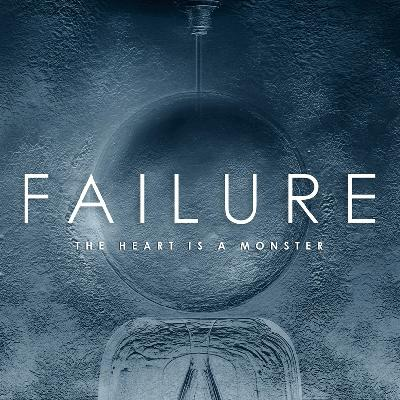
FAILURE | The Heart Is a Monster
They are my favorite band of all time, and reunited in 2014 after a 15 year-plus break. This is their follow-up album to Fantastic Planet and it slays! The wait for new music from Failure was well worth it. | Andey Delesdernier a.k.a. Afistaface - DJ
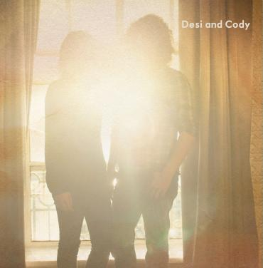
DESI AND CODY | Desi and Cody
This is a great record that encompasses the true Tulsa spirit by combining elements of Americana with vocal harmonization. With guest features from an array of Tulsa artists, it’s a journey from one song to the next, with no two songs sounding the same. | Cody Brewer - Grazzhopper
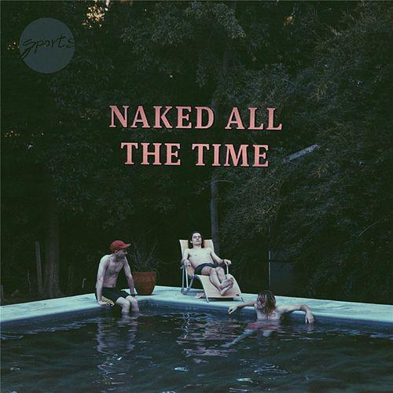
SPORTS | Naked All the Time
Hipster Fun Facts: Did you know that this debut album guest features Ryan Lindsey (Broncho) on background vocals and James McAlister (Sufjan Stevens) on drums? Or that it has over half a million plays on Spotify? Or that the average age of this Tulsa band is 20? Have you heard this album yet? | Costa Stasinopoulos - producer/engineer
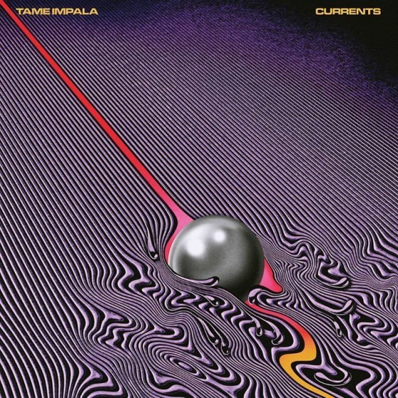
TAME IMPALA | Currents
My favorite album of 2015 is Tame Impala’s third release, Currents. Kevin Parker continues to prove his genius in production, hooks, and lyrics. This is a voyage further towards ‘psyche pop’ from where Lonerism left off, and Parker delivers with tracks “Let It Happen” and “Cause, I’m A Man.” | Hank Hanewinkel III - Nuns, And There Stand Empires
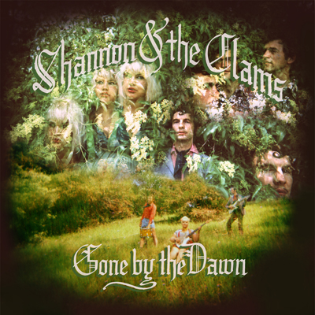
SHANNON AND THE CLAMS | Gone by the Dawn
Out of all the bands reviving the sweet sounds of the ‘50s and ‘60s, Shannon and The Clams are doing it best. Gone by the Dawn is unlike anything I’ve heard that has come out of the array of music released this year. With the sexy vocals of Shannon Shaw meshing perfectly with the strident guitar licks of Cody Blanchard, you can’t help feeling a certain kinda way. | Covey Tims - The Riot Waves
AND THERE STAND EMPIRES | III
This is the record I can’t stop listening to this year. An instrumental album featuring some of Tulsa’s finest musicians, this became the soundtrack to my daily life. Mixing elements of jazz, classical and progressive music yet with enough of an edge at times to almost feel punk. One of my favorite releases this year. Check it out, it may be one of yours as well. | Calvin Compton - Starship Records & Tapes
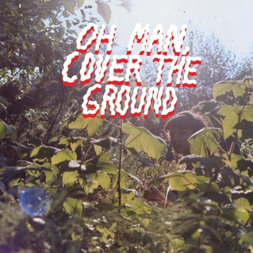
SHANA CLEVELAND & THE SANDCASTLES | Oh Man, Cover the Ground
It’s a really pretty but haunting folk record. Not something I usually get into but Shana is currently one of my favorite songwriters (she plays in girl group La Luz who also came out with one of my top albums of the year, Weirdo Shrine). | Kylie Slabby - The Daddyo's, Who & The Fucks, Ramona & The Phantoms
BARRERACUDAS | Can Do Easy
If you’re a fan of power pop or rock & roll in general then PICK THIS RECORD UP! Stand out tracks like “Jerk,” “Promises” or “Cut Me Loose” had us singing along the first listen through. Give ‘em a listen, you’ll be singing along, too! | Tony & Michelle Cozzaglio, Boulevard Trash
PRURIENT | Frozen Niagara Falls
The liner notes say it all: “Listen at night while the snow falls silently under street lights.” Prurient (aka Dominick Fernow) delivers a sprawling masterpiece weaving a schizophrenic soundscape of harsh noise, ambient drones, throbbing synths, industrial clamor, and a healthy amount self-doubt. | Jay Hancock, Holy Mountain Music & Oddities
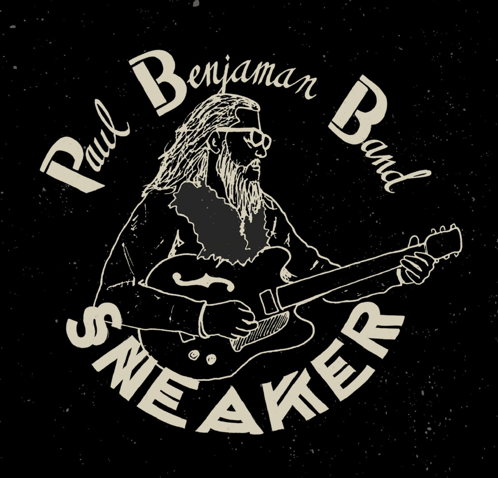
PAUL BENJAMAN BAND | Sneaker
Up to the point of Paul Benjaman’s release, my two-year-old daughter was obsessed with my album. Now, every morning it’s, “I wanna hear Paul Benjaman.” The opening track starts out with such a classic groove that hooks you immediately. The second tune has a twin guitar melody where both Jesse Aycock and Paul are in sync and it’s very moving. The whole album is just wonderful to me—every tune grabs you. | Jacob Tovar - Jacob Tovar and the Saddle Tramps
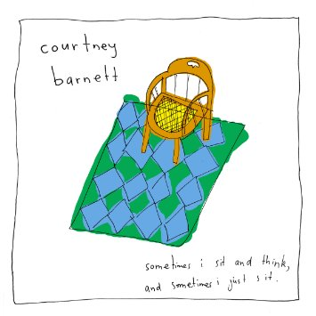
COURTNEY BARNETT | Sometimes I Sit and Think, and Sometimes I Just Sit
The songwriting speaks for itself on this record. It’s solid all the way through. Instead of relying on pretty vocal melodies to carry the song like people might expect from a female artist, she has a super unique vocal delivery. She doesn’t have a singer/songwriter vibe; she’s rock and roll and is a great guitar player. She has a strong kind of in-your-face presence both on stage and on the recording. Did I already say she rips on guitar? | Penny Pitchlynn, Broncho
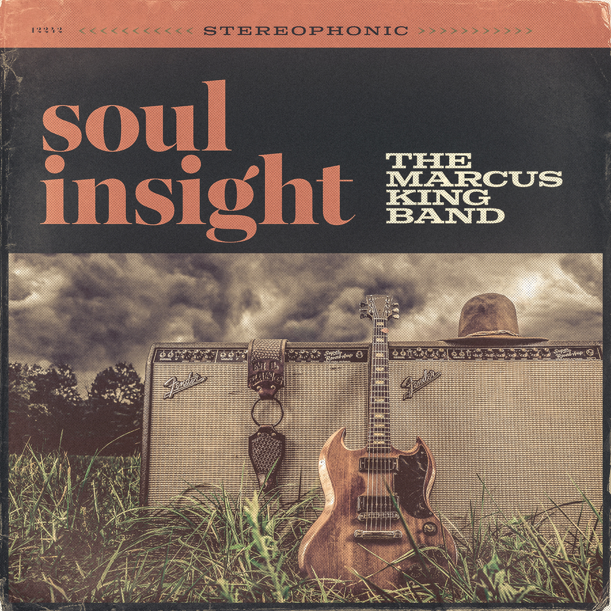
THE MARCUS KING BAND | Soul Insight
One of my personal favorites was The Marcus King Band, Soul Insight. It’s got all the elements—incredible guitar playing, soulful vocals, dynamic rhythms. We had them in Tulsa on a Sunday afternoon in May at Guthrie Green, which got rained out so we moved it to Fassler Hall. It was packed and hoppin’. They showed up at The Colony later that night for Paul Benjaman’s Sunday Nite Thing and sat in all night. | Brian Horton, Horton Records
VOICE'S CHOICES
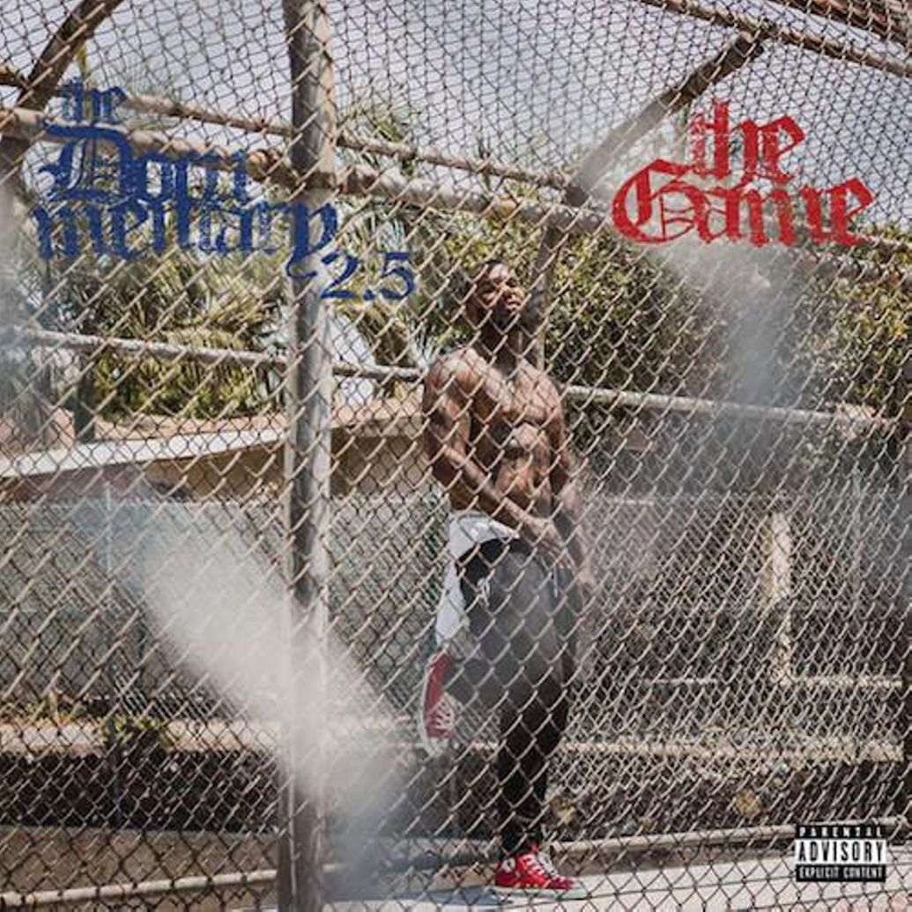
THE GAME | The Documentary 2.5
The Documentary 2.5 is the second half of The Game’s highly anticipated double album. The Game’s ear for choosing a pallet of decadent beats that successfully blend varying styles sets this album apart from the rest, including part one. Solid production combined with guest appearances from Nas, Busta Rhymes, Lil Wayne, Scarface, E-40, and many more make The Documentary 2.5 a no-brainer for album of
the year. | Mary Noble
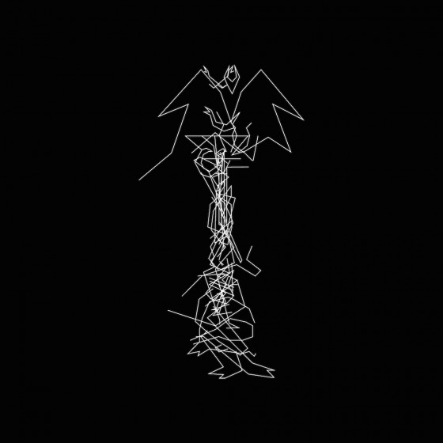
ONEOHTRIX POINT NEVER | Garden of Delete
In 2014, Aphex Twin dropped Syro, a collection of perfect acid house and techno, but it’s Oneohtrix Point Never’s 2015 release Garden Of Delete that truly carries AT’s boundary-burning torch. Blurring the line between music and museum piece, 0PN mines 1997-9/11 for this album’s sounds. With such a trove of tones to tinker with, Daniel Lopatin produced an aural anxiety attack in brain massaging stereo. Synth drone smashes against drill-core and faux-dubz, littering the brain with Final Fantasy load screens, Goku button-ups and tamagotchis. | Mitch Gilliam
Listen to all of the top picks on Spotify!
For more from Mitch, read his profile of local emcee Johnny Polygon.
For more from Mary, read her profile of local emcee Mike Dee.
.jpg)
.jpg)